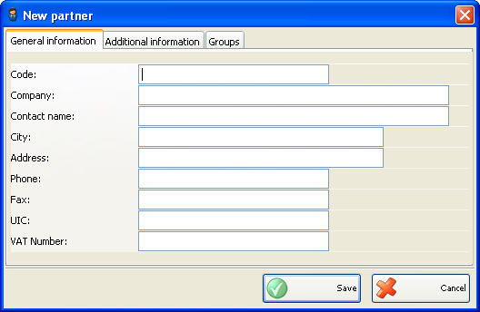
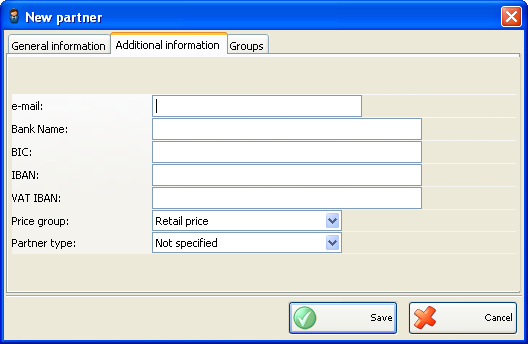
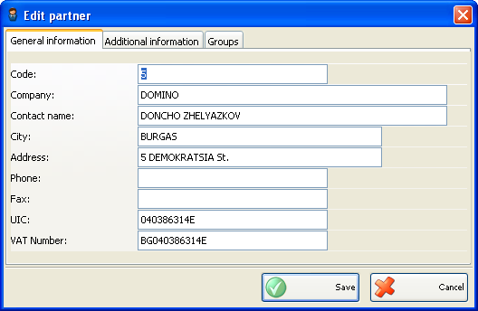
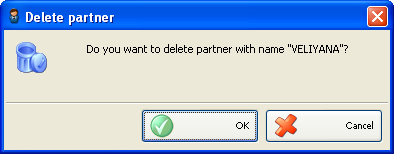

Adaugare. Editare si stergere parteneri
Puteti adauga parteneri in lista de parteneri din fereastra Parteneri noi.

Introduceti informatiile de baza pentru partener in primul �tab� Informatii: cod, companie, informatii contact, oras, adresa, telefon, fax, CIF si numar inregistrare RC.

Utilizati al doilea �tab� Informatii aditionale pentru introducerea informatiilor aditionale ai partenerului: e-mail address, nume banca, BIC, IBAN si TVA IBAN, grupe prêt si tip partener.
Grupa de prêt determina care lista de preturi se va aplica partenerului respective. Se pot defini pana la 10 grupe de preturi. Folositi pentru definire grupe preturi �modulul Schimbare Preturi�.
Tip partener poate fi ales dintre: client, furnizor sau universal.
Puteti edita toate informatiile partenerului din fereastra Editare Partener.

Pentru stergerea unui articol din lista, selectati linia corespunzatoare din lista (tabel) si click pe butonul Sterge sau apasati tasta� Delete.

Confirmati stergerea in partea de sus a ferestrei pentru a completa actiunea.
�2006-2012 Microinvest, All rights reserved